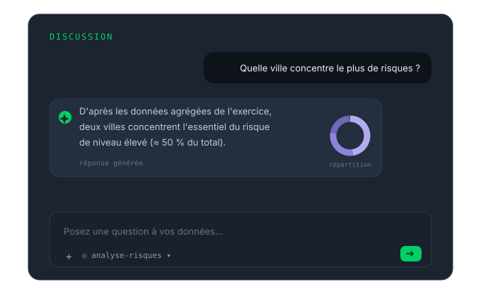
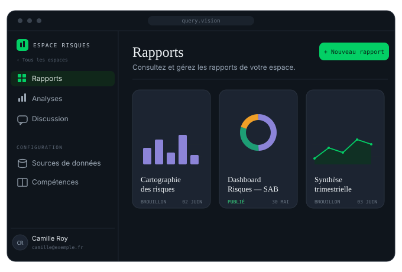

Agent 02 — SpotVision — The relay
Spot Vision makes your reference documentation talk: your teams navigate the corpora you entrust to it in plain language — internal procedures, contract histories, financial archives, strategic plan — and get answers faithful to the content, within their scope.
What the agent can do
Document navigation
Hundreds of pages of procedures, contracts or archives become a conversation: anyone can ask a question and get the exact answer, faithful to the reference text — no more keyword searches and stray document versions.

Governed scope
Document corpora are attached to workspaces, and access rights mirror your organization. Spot Vision answers on substance, from the entrusted scope — it never promises what it doesn't have.

What your teams entrust to it
Operating procedures, policies, approval workflows — the applicable rule, without hunting for the document it lives in.
Master agreements, amendments, clauses — the contractual content answers directly, article in hand.
Annual reports, closing notes, past accounting rules — the organization's financial memory stays searchable.
Pillars, objectives, action sheets — every manager queries the same reference version. At a social protection group: 3,800 employees aligned.
How it works
You designate the reference corpora — procedures, contracts, archives, strategic plan. They are prepared and validated through the Secure Intake Gateway.
Each repository is attached to a workspace, with access rights per team and per user.
Your teams ask their questions in plain language and get answers faithful to the content, with sources cited.
Spot Vision is built on proven, state-of-the-art technology building blocks: latest communication security protocols, database encryption, strict information partitioning.
Next step
A demonstration on one of your document corpora, using your vocabulary. No commitment.